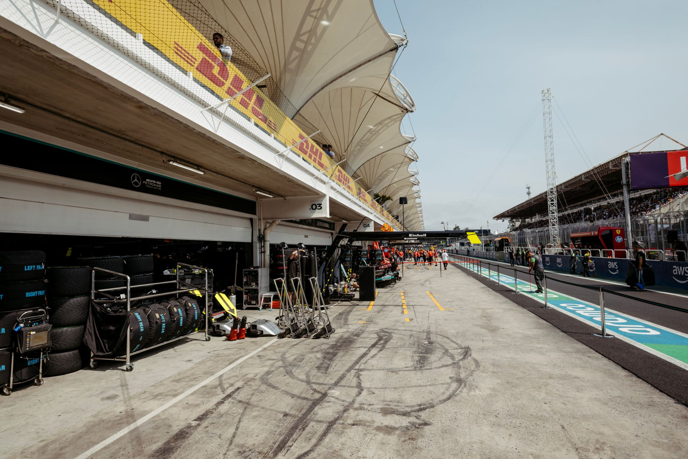

Engineering
Measured, tested, improved
545 Motorsport is led by an engineer. Every decision about the car, the driver and the programme starts with evidence.
Our approach
Engineering before ego
Endurance racing rewards the team that makes the fewest mistakes over the longest time. That makes it an engineering problem as much as a driving one.
We treat every session as a test: set a question, gather the data, change one thing, and measure again. What works is kept. What doesn't is learned from.
No shortcuts and no guesswork, just steady, documented progress, season by season.

On the car
- Setup built from data, not habit
- Telemetry reviewed after every session
- Reliability first: a car has to finish to win
- Every change tested and recorded
In the programme
- Clear targets for each season
- Driver development measured lap by lap
- Decisions written down and reviewed
- Partners kept informed with real results
Engineering partners
Interested in working with us on the technical side, from parts and data to testing time? Get in touch or see our sponsorship packages.